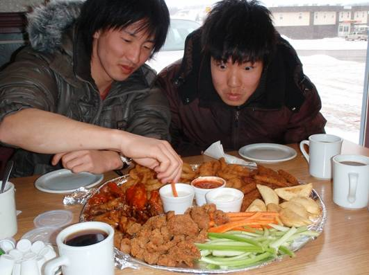

□11日目(2/22)High Level→Manning
8日目の朝と同じ無料の朝食をいただいた後、昨日クラッシュしたJeepの様子を見てみた。どうやら冷却水の流出はとまっているようだ。というか、ラジエーター付近は凍りついた状態となっている。エンジンをかけてみると、しっかり1発でかかったが、微妙な異音がしたような気も。とりあえず出発。最初は順調な様である。

車をレッカーしたのはManning Collision Repairという車の衝突修理会社。合宿を続行するためには、何が何でもこの車でバンクーバーまでたどり着かなくてはならない。修理スタッフの人は直す気満々だが、1週間くらいかかると言ってきた。それでは日本に帰れなくなるってことで、会社の社長も交えて交渉開始。英語力に乏しいところを、損保ジャパンの海外サポートサービスである同時通訳に助けてもらい、交渉していく。レンタカー会社のAlamoにも判断を仰がないといけないため、通訳さんは同時に、修理会社、Alamo、直登の間の通訳をするといった状況である。長い交渉の末、車が走る程度の修理をしてもらえることになった。しかし、今日は日曜なので、修理は明日からだという。社長さんに明日の朝、工場に車を持ってきてくれと言われ、今日はManningに泊まることとした。

泊まると決めたのはManning Motor Innというハイレベルで泊まったのと同じようなモーテル。しかし現在11:30。こんな時間にチェックインできるのかと思ったがOKだった。昼食はモーテルの中のカフェで食べることに。大皿料理を1皿注文。4人で量はちょうど良かったが、揚げ物メインで少々重く感じた。


部屋に入ってもあまりやることはないので、昼寝をしたり、ナポったり、本を読んだりして時間を過ごす。テレビをつけるとカーリングをやっていた。カナダの州別対抗戦のようだ。言ってる英語はさっぱり解らなくても、スポーツは万国共通。オリンピックの時くらいしか見ることのないカーリングだが、見ていて面白かった。
昼食が重かったためか、寝ころんでいるだけだからか、夜になってもあまりお腹がすいてこない。8時くらいになってから、みんなでコンビニに行ってサンドイッチなどの軽食を買って、今夜はそれで済ませた。